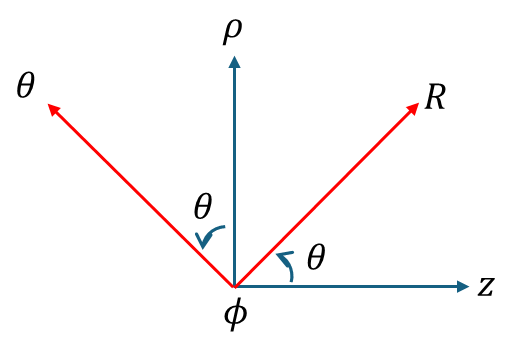

(b) Tensor components transformation II
중요사항: 동일 [실 공간] 에 대한 것으로 텐서의 성분 변환 을 다룬다.
0. 정리

- 데카르트 → 원통, 원통 → 구
- 원통 → 데카르트, 구 → 원통
1. 데카르트 좌표계 ↔︎ 원통 좌표계

- 데카르트 좌표계 기준에서, 데카르트 좌표계의 국소 벡터 표현
- 데카르트 좌표계 기준에서, 원통 좌표계의 국소 벡터 표현
국소 벡터는 텐서 이므로, 좌표계에 상관없이 동일해야 한다.
$$ \begin{bmatrix} u_1 \\ u_2 \\ u_3 \end{bmatrix} =\begin{bmatrix} \cos\phi & -\sin\phi & 0 \\ \sin\phi & \cos\phi & 0 \\ 0 & 0 & 1 \end{bmatrix} \begin{bmatrix} v_1 \\ v_2 \\ v_3 \end{bmatrix} $$또한, 위의 행렬은 회전변환 행렬이므로, 유니타리 연산자 이다. 따라서, 역행렬은 전치행렬과 같다.
$$ \begin{bmatrix} v_1 \\ v_2 \\ v_3 \end{bmatrix} =\begin{bmatrix} \cos\phi & \sin\phi & 0 \\ -\sin\phi & \cos\phi & 0 \\ 0 & 0 & 1 \end{bmatrix} \begin{bmatrix} u_1 \\ u_2 \\ u_3 \end{bmatrix} $$2. 원통 좌표계 ↔︎ 구 좌표계
- 원통 좌표계 기준에서, 원통 좌표계의 국소 벡터 표현
- 원통 좌표계 기준에서, 구 좌표계의 국소 벡터 표현
국소 벡터는 텐서 이므로, 좌표계에 상관없이 동일해야 한다.
$$ \begin{bmatrix} u_1 \\ u_2 \\ u_3 \end{bmatrix} =\begin{bmatrix} \sin\theta & \cos\theta & 0 \\ 0 & 0 & 1 \\ \cos\theta & -\sin\theta & 0 \end{bmatrix} \begin{bmatrix} v_1 \\ v_2 \\ v_3 \end{bmatrix} $$또한, 위의 행렬은 회전변환 행렬이므로, 유니타리 연산자 이다. 따라서, 역행렬은 전치행렬과 같다.
$$ \begin{bmatrix} v_1 \\ v_2 \\ v_3 \end{bmatrix} =\begin{bmatrix} \sin\theta & 0 & \cos\theta \\ \cos\theta & 0 & -\sin\theta \\ 0 & 1 & 0 \end{bmatrix} \begin{bmatrix} u_1 \\ u_2 \\ u_3 \end{bmatrix} $$3. 데카르트 좌표계(D) → 구좌표계(S)
데카르트 좌표계에서 구좌표계로의 좌표 변환 행렬 $M_{SD}$ 는
$$ M_{SD}=M_{SC}M_{CD} $$$$ M_{SD}=\begin{bmatrix} \sin\theta & 0 & \cos\theta \\ \cos\theta & 0 & -\sin\theta \\ 0 & 1 & 0 \end{bmatrix} \begin{bmatrix} \cos\phi & \sin\phi & 0 \\ -\sin\phi & \cos\phi & 0 \\ 0 & 0 & 1 \end{bmatrix} $$구좌표계에서 데카르트 좌표계로의 좌표 변환 행렬 $M_{DS}$ 는
$$ M_{DS}=M_{DC}M_{CS} $$$$ M_{DS}=\begin{bmatrix} \sin\theta & \cos\theta & 0 \\ 0 & 0 & 1 \\ \cos\theta & -\sin\theta & 0 \end{bmatrix} \begin{bmatrix} \cos\phi & -\sin\phi & 0 \\ \sin\phi & \cos\phi & 0 \\ 0 & 0 & 1 \end{bmatrix} $$example1)
Express vector $\vec{A}=\hat{x}\left(x+y\right)+\hat{y}\left(y-x\right)+\hat{z}z$ in spherical coordinates.